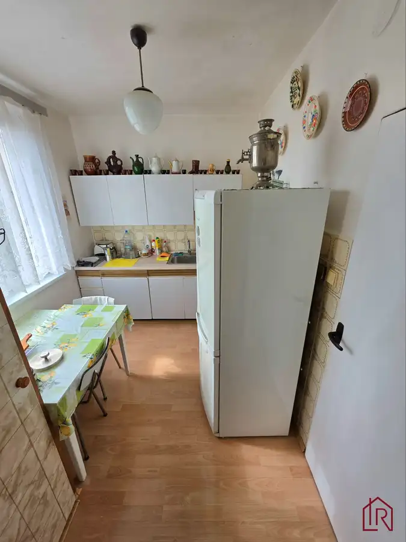
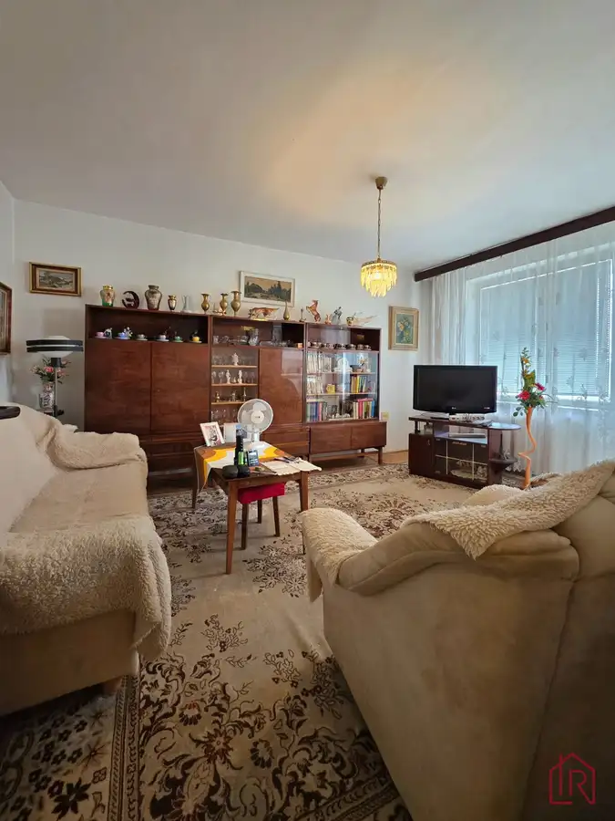
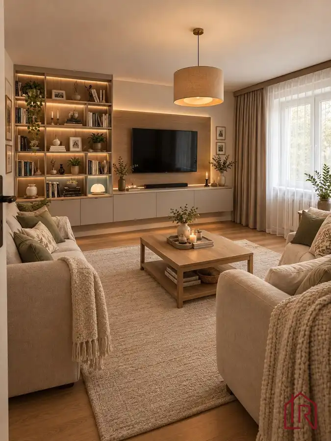
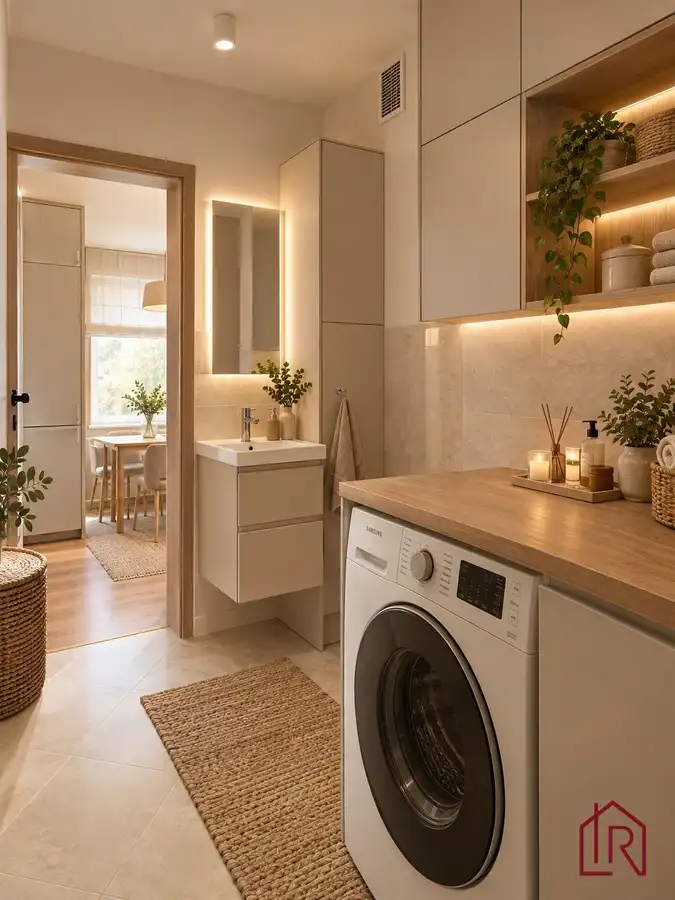

: 2-izbový byt, Košice – Južná trieda, 51 m2
mestská časť Juh, Košice




- Dispozícia2-izbový
- Plocha51 m²
- Poschodie3. z 12
- Stavčiastočne prerobený
- Vlastníctvoosobné
- Energetická triedaC
O nehnuteľnosti
IMPULZ REAL a LUCIA TALIANOVÁ ponúkajú na predaj 2-izbový byt na Južnej triede v Košiciach. Výborná dostupnosť do centra mesta- MHD, električky. Vďaka orientácii bytu na tichú stranu, ponúka pokojné bývanie. Výhodou je bezbariérový vstup do BD a bytu. Disponuje výmerou 51 m2 a nachádza sa v zateplenom bytovom dome. Výhodou je veľké parkovisko priamo pri bytovom dome.
Praktický byt je ideálnou voľbou na vlastné bývanie aj ako investícia na prenájom. Lokalita Juh je obľúbená vďaka rýchlej dostupnosti do centra mesta, rovnako sa v blízkosti nachádzajú zastávky pre medzimestskú dopravu s napojením na Valaliky park.
CENA A FINANCOVANIE:
Nehnuteľnosť je k dispozícii k predaju s možnosťou financovania prostredníctvom úveru.
- cena: 167.000,-eur
- financovanie možné aj cez hypotéku / úver
ZÁKLADNÉ PARAMETRE BYTU:
Tento 2-izbový byt ponúka účelné dispozičné riešenie a príjemné bývanie v zateplenom obytnom dome.
- typ nehnuteľnosti: 2-izbový byt na predaj Košice
- úžitková plocha: 51 m2 (vrátane pivnice), bez plochy loggie
- poschodie: 3. poschodie z 12
- materiál bytového domu: panel
- výťah: nový, nákladný
- vlastníctvo: osobné výlučné
- stav bytu: čiastočne prerobený (okná a bezpečnostné dvere)
- orientácia: východ (všetky miestnosti)
PODROBNÝ POPIS A DISPOZÍCIA:
Byt má praktickú dispozíciu s jednou nepriechodnou spálňou a obývačkou priechodnou do kuchyne.
- dispozícia: nepriechodná spálňa s rozmermi 3,59 x 4m, obývačka s rozmermi 4,6 x 3,6m a kuchyňa s rozmermi 2,34 x 2,98m
- vstupná chodba- na chodbe sa nachádza praktický šatník, ktorý umožňuje po rekonštrukcii vytvoriť vstavanú skriňu
- kúpeľňa a toaleta: pôvodné panelové jadro bytové jadro so samostatnou toaletou (vďaka rozumnej dispozícii a panelovému jadru je rekonštrukcia sociálnych zariadení finančne menej náročná)
- okná a vchodové dvere: plastové okná vymenené v roku 2016, plne funkčné a certifikované bezpečnostné vchodové dvere zaisťujú lepšiu izoláciu aj bezpečnosť
- podlahy- v spálni a obývačke sú pôvodné parkety, ktoré boli po celý čas zakryté kobercom, majú výborný stav, v chodbe a sociálnych zariadeniach dlažba a v kuchyni laminátová podlaha
- kuchyňa- pôvodná kuchynská linka s voľne stojacim sporákom
- inžinierske siete a rozvody- pôvodné elektrické rozvody, vymenené stupačky, optika
- vykurovanie- zabezpečené cez spoločné ústredné diaľkové vykurovanie (CZT).
- príslušenstvo- k bytu prislúcha latková drevená pivnica s rozmermi 1,5 x 1,5m
- byt sa predáva tak ako stojí a leží, vrátane nábytku
- v inzeráte je použitá vizualizácia, ktorá slúži k zobrazeniu možných podôb interiéru po rekonštrukcii
BYTOVÝ DOM A SPOLOČNÉ PRIESTORY:
Bytový dom prešiel obnovou, čo prispieva k nižším prevádzkovým nákladom a vyššiemu štandardu bývania.
- zateplenie- zateplený bytový dom zaručuje lepšie tepelnoizolačné vlastnosti a úsporu energií
- strecha- zrekonštruovaná strecha počas zateplenia v roku 2017
- zrekonštruované vstupné vchody do bytového domu
- vymenený nový zväčšený výťah vrátane kabíny, stojí priamo na poschodí
- energetická trieda: certifikát C – úsporná budova
- spoločné priestory- k dispozícii je spoločný priestor na bicykle a kočiare
LOKALITA A OBČIANSKA VYBAVENOSŤ:
Lokalita Košice – Juh na Južnej triede patrí medzi obľúbené časti mesta s výborným napojením na centrum.
- mestská časť: Košice – Juh, sídlisko Juh
- občianska vybavenosť: ZŠ Požiarnická, Gemerská Staničná, MŠ Smetanova v bezprostrednej blízkosti, Nemocnica s poliklinikou Rastislavova, všetko vo výbornej pešej dostupnosti
- dopravná dostupnosť: v bezprostrednej blízkosti MHD a zastávky električiek
- parkovanie: verejné bezplatné parkovanie v okolí bytového domu, bezproblémové parkovanie
VÝHODY NEHNUTEĽNOSTI:
Kombinácia výhodnej polohy a zatepleného domu vytvára stabilnú hodnotu nehnuteľnosti.
- zateplený bytový dom s novou strechou a energetickým certifikátom C
- panelové jadro a samostatná toaleta a rozumná dispozícia bez nutnosti ju meniť vytvára nižšie náklady na rekonštrukciu
- možnosť zrekonštruovať si byt podľa seba, s rekonštrukciou radi poradíme
- výborná poloha v širšom centre mesta Košice – Juh
- pri serióznom jednaní zvážime každú ponuku
KONTAKT NA MAKLÉRA:
V prípade záujmu o obhliadku alebo viac informácií kontaktujte licencovaného makléra:
Lucia Talianová , , certifikovaný a licencovaný maklér NARKS, realitná kancelária IMPULZ REAL
Viac ako nehnuteľnosť. DOMOV.
V IMPULZ REAL spájame profesionálny prístup s ľudským prístupom k ľuďom. Zabezpečíme Vám kompletný a bezpečný servis – právne služby, financovanie aj prepis energií. Pomôžeme Vám nielen úspešne predať Vašu nehnuteľnosť, ale nájsť miesto, ktoré budete s radosťou nazývať domov.
IMPULZ REAL – Vaša Rodinná Realitka, ktorej DÔVERUJETE.
Parametre
- Celková rozloha
- 54 m²
- Úžitková plocha
- 51 m²
- Poschodie
- 3/vyššie poschodie
- Počet poschodí
- 12
- Počet izieb
- 2
- Vlastníctvo
- osobné
- Stav
- čiastočne prerobený
- Status
- aktívne
- Odvoz odpadu
- áno
- Plyn
- áno
- Internet
- optika
- Kúpeľňa
- vaňa
- Vykurovanie
- spoločné
- Balkón
- nie
- Lódžia
- áno - 1
- Terasa
- nie
- Pivnica
- áno
- Garáž
- nie
- Výťah
- áno
- Parkovanie
- vonkajšie
- Postavené z
- panel
- Zariadenie
- čiastočne
- Zateplený objekt
- áno
- Energetický certifikát
- C
- Predzáhradka
- nie
- Bezbariérový prístup
- áno
- Okná
- plastové
- Orientácia
- východná
- Dátum zverejnenia
- 2026-09-27
Kde to je
Mohlo by Vás zaujímať
 ZáhradyNové
75 000 €: Záhrada s chatkou, Košice – Krásna, 716 m², elektrina
mestská časť Krásna, Košice
716 m²
ZáhradyNové
75 000 €: Záhrada s chatkou, Košice – Krásna, 716 m², elektrina
mestská časť Krásna, Košice
716 m²
 Rodinné domyNové
245 000 €Rezervované, Celoročné bývanie pri Košiciach, pozemok 901 m2
Okolie
4-izbový150 m²
Rodinné domyNové
245 000 €Rezervované, Celoročné bývanie pri Košiciach, pozemok 901 m2
Okolie
4-izbový150 m²
 Nebytové priestoryNové
150 000 €: Investičný priestor, Lorinčík, 4,3 % výnos
mestská časť Lorinčík, Košice
52.23 m²
Nebytové priestoryNové
150 000 €: Investičný priestor, Lorinčík, 4,3 % výnos
mestská časť Lorinčík, Košice
52.23 m²